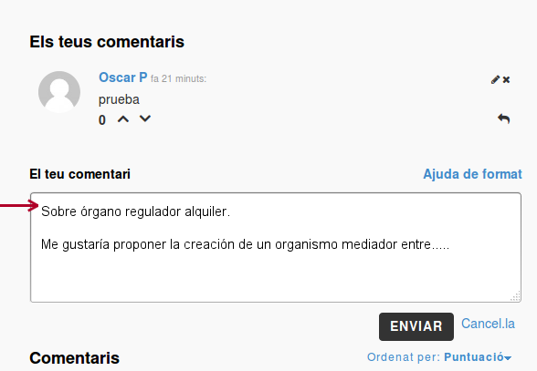

Aporta, discute.
- APORTA NUEVAS PROPUESTAS
- DEBATE SOBRE PROPUESTAS EXITENTES
De los 4 bloques existentes se incorporarán las 5 propuestas más votadas por los usuarios
El resto de aportaciones, se tendrán en cuenta a la hora de modificar laspropuestas existentes.
De cara al debate:
- Cuando generes un comentario podrá ser respondido por parte de la comunidad.
- Un aspecto importante es que se pueden votar comentarios pero no las respuestas a los mismos.
- Los comentarios pueden ser nuevas propuestas a incluir o modificaciones a alguna de las presentadas.
- Si es una nueva propuesta pon un titulo.
- Si es una modificación importante de alguna de las propuestas presentadas, haz referencia a la misma indicando al inicio del comentario número y título.
